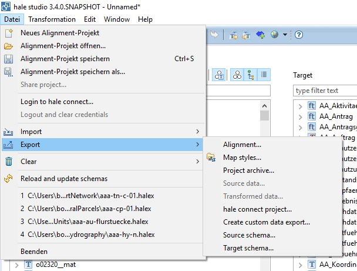
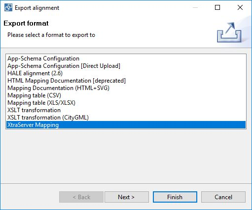
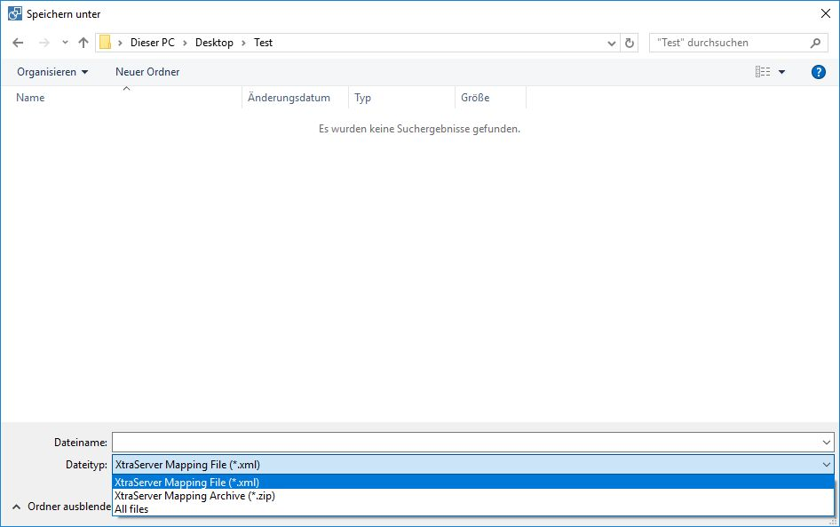

Export XtraServer mapping
Open the export dialog (File -> Import -> Alignment -> XtraServer Mapping).

Choose the export format XtraServer Mapping in the next step.

There are two different options for the export. You can choose them via the file type field.

- XtraServer Mapping File (*.xml): only the mapping file is generated.
- XtraServer Mapping Archive (*.zip): the export will generate a ZIP archive containing all the required files
- XtraSrvConfig_Mapping.inc.xml
- XtraSrvConfig_Geoindexes.inc.xml
- XtraSrvConfig_FeatureTypes.inc.xml
- XtraSrvConfig_GetSpatialDataSetSQ.inc.xml
- XtraSrvConfig_StoredQueriesToCache.inc.xml